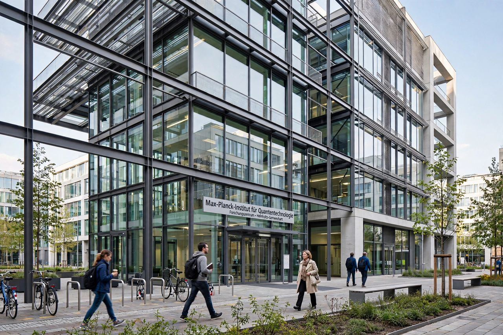

The Fraunhofer Society (German: Fraunhofer-Gesellschaft zur Förderung der angewandten Forschung e. V., "Fraunhofer Society for the Advancement of Applied Research") is a German research organisation with more than seventy institutes spread throughout Germany, each focusing on different fields of applied science, plus research centres in other countries. It employs roughly 30,000 people, mostly scientists and engineers, with an annual research budget of around €3 billion, and is one of the largest organisations for applied research in Europe. It is named after Joseph von Fraunhofer (1787–1826), a scientist, engineer, and entrepreneur.
| Fraunhofer Society | |
|---|---|
 A Fraunhofer institute building in Germany. | |
| Founded | 26 March 1949, Munich |
| Type | Applied research organisation |
| Headquarters | Munich, Germany |
| Staff | ~30,000 |
| Budget | ~€3 billion (annual research volume) |
| Named after | Joseph von Fraunhofer |
The society was founded in Munich in 1949, at a meeting in the Bavarian Ministry of Economic Affairs, as post-war Germany sought to rebuild its industrial and scientific base. It grew steadily as the Federal Republic invested in contract research for industry, and expanded rapidly after German reunification, taking over research facilities in the former East Germany. Under its characteristic funding model, roughly 70 per cent of the society's income comes from contracts with industry and publicly funded research projects, with the remainder provided as institutional funding by the federal and state (Länder) governments.
The Fraunhofer Institutes work in fields including microelectronics, information and communications technology, production engineering, materials, energy, health, and defence. The best-known Fraunhofer invention is the MP3 audio compression format, developed principally at the Fraunhofer Institute for Integrated Circuits (IIS) in Erlangen; licence fees for MP3 and related audio patents long contributed substantially to the society's income. Other institutes are known for solar energy research (Fraunhofer ISE in Freiburg) and production technology (IPT in Aachen).
Each institute is led by a director, often jointly appointed as a university professor, which links the society closely to German universities. The society's executive board sits in Munich. Its mix of base funding and competitive contract income — the "Fraunhofer model" — is frequently cited internationally as a template for applied-research organisations, alongside bodies such as the Netherlands' TNO and the British Catapult centres.